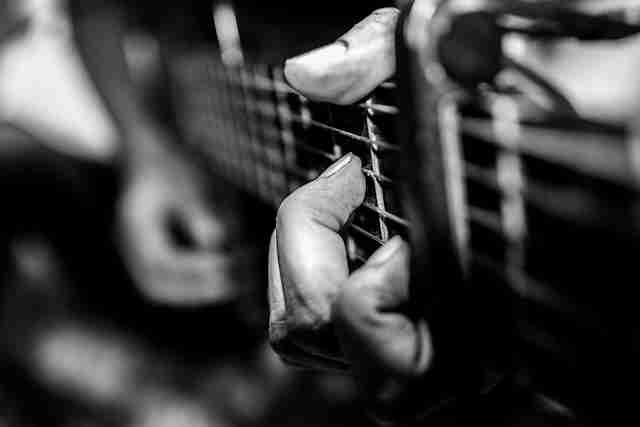
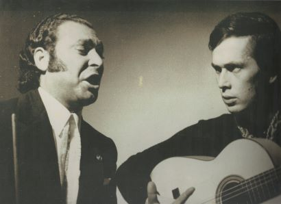

Traditionally, flamenco music is not written down. For more than 300 years it hasb been passed on through many generations of Spanish people. In the modern day Flamenco guitar is the most famous, but this article seeks to show that Flamenco music is so much more than that.
It is a much wider musical phenomenon and perhaps even a culture. Flamenco is dramatic, deep and sounds exotic.
While the picture
looks stunning,
this is not a flamenco,
but a western guitar.

three manifestations
Again, Flamenco music is best known for its influence on guitar playing, but is in fact a much wider musical phenomenon. There are three main manners of practicing Flamenco: toque (guitar), cante (vocal), baile (dance). It is a strong part of Spanish – and especially Andalusian – heritage and is still performed on romantic Spanish nights. In fact, Flamenco has crossed borders and found its way into popular music: Eric Clapton, Willie Nelson and others have been strongly inspired by the members of this musical style.
Traditionally, the toque was there to serve dancers and singers, but it seems the Flamenco guitar has become most famous, studied and cultivated from all other manifestations of Flamenco. The clapping, guitar drumming, finger snapping and even the melodies that we hear in purely instrumental performances showcase that the style is about accompaniment of Flamenco dancers and singers. So, the solo guitar that has become most popular is certainly not the only asset of Flamenco Music. In fact, it is more of a harmony and the guitar traditionally has a supportive role.
A supportive role
The above musical clues point out that, traditionally speaking, the guitar has a mere supportive role in Flamenco music. Indeed, in cante, guitarists almost always have a background role. They provide the introduction and a solo or two. But, it is the dramatic vocal representation of the piece that stands at the foreground. It is even more the case for dancing. Sometimes the guitarists are in the dark as the spotlights literally shine on the dancer. The dancer’s expressive, intense motions and facial expressions are the central part of a baile performance. It goes to show the style encompasses more than the most popular form of Flamenco guitar. For the Spanish, flamenco means a harmonized form of entertainment and drama. Perhaps it even goes further for the Andalusians. For them it could be a culture or oral tradition of sorts.

The famous Paco de Lucía
As described above, traditional ‘Flamenco songs’ often include more than just a single guitar. When Flamenco is performed, it cycles through a number of palos (with varying musical scales, tempos, traditional instruments as well as gender roles and melodies). The guitar and those who clap or snap their fingers lead the cycle of these palos while the singer must change the emotion, intensity and volume accordingly. One famous Flamenco scale is the Phrygian scale. This scale is rather forthright in theory, but has been made much more complex by the guitarists of the new flamenco style, who added jazz, blues and other influences into the traditional Flamenco scales.
Any guitarist wishing to study flamenco via the internet could have a hard time as this music is traditionally not noted down (tabulated). The beautiful website
ravennaflamenco.com states this so well: “It is passed on from hand to hand and ear to ear”.
Further Reference
Flamenco Piece: Singer and Guitar
Do yourself a favor and listen to this cante (by María Ángeles Martínez) accompanied by toque-player Eduardo Rebollar. It serves as a prime illustration of this article. The Flamenco aspects of strong emotion, clapping, melody and the circling of palos all come back in this beautiful exposé.